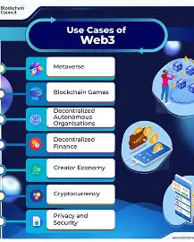

Web 3.0
Web 3.0 represents the third generation of the World Wide Web and is often
referred to as the "semantic web." It focuses on making data more meaningful
and enabling machines to understand and process information intelligently.

In Web 3.0, technologies such as artificial intelligence, machine learning,
and blockchain are used to create smarter and more personalized user
experiences. It aims to provide more accurate search results and better
automation.
Characteristics of Web 3.0
- Semantic and intelligent data processing
- Use of artificial intelligence and machine learning
- Decentralization using blockchain technology
- Personalized user experiences
- Better data integration and connectivity
Examples of Web 3.0
- Smart assistants (e.g., Siri, Google Assistant)
- Blockchain-based applications
- Advanced search engines with AI capabilities
Advantages
- More intelligent and efficient web services
- Improved data accuracy and relevance
- Greater user control over data
- Enhanced personalization
Limitations
- Complex to develop and implement
- Requires advanced technologies
- Limited adoption compared to Web 2.0
In summary, Web 3.0 aims to make the web smarter by enabling systems to
understand data and provide more meaningful and personalized interactions.